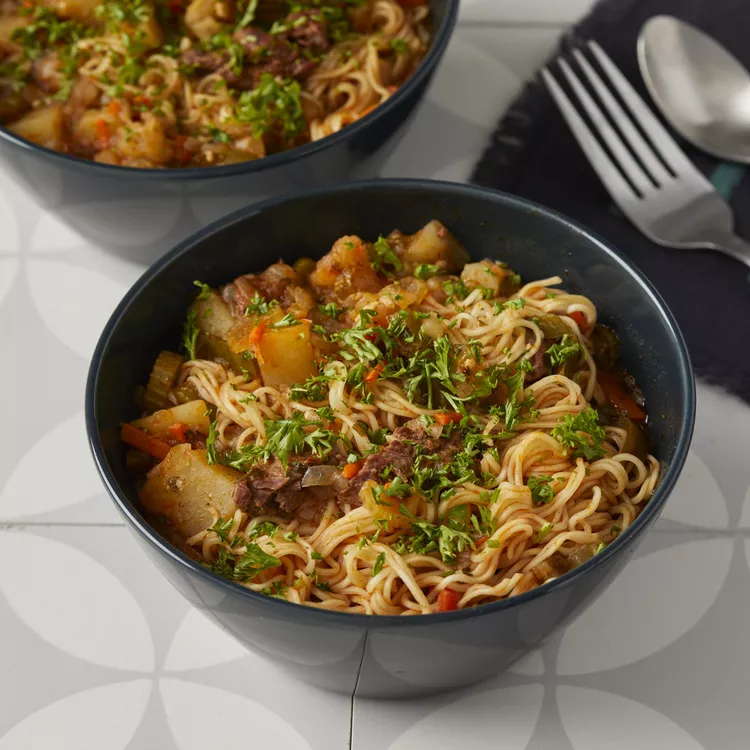

Lagman

Description
Lagman is a savory and aromatic Central Asian dish that tantalizes the taste buds with its rich flavors. This hearty noodle soup is traditionally made with hand-pulled noodles, succulent chunks of meat (often beef or lamb), and an assortment of vegetables like bell peppers, carrots, and onions. The broth is infused with a blend of aromatic spices, such as cumin, paprika, and garlic, giving lagman its distinctive and satisfying taste. Whether enjoyed as a comforting meal on a chilly day or a delicious treat any time of the year, lagman is a culinary delight that showcases the vibrant flavors of Central Asia.
The beauty of lagman lies in its versatility and adaptability to regional variations. Across Central Asia, you'll find unique twists on this beloved dish, with each region adding its own distinct ingredients and techniques. Some versions feature additional ingredients like tomatoes, potatoes, or even pickles, while others incorporate spices like turmeric or coriander for a touch of complexity. Regardless of the specific recipe, lagman consistently delivers a delightful combination of textures and flavors, making it a beloved dish that captures the essence of Central Asian cuisine.
Ingredients
- 2 tablespoons olive oil
- 1 onion, finely chopped
- ½ pound beef chuck, cut into strips
- 1 teaspoon ground cumin
- ½ teaspoon ground black pepper
- 2 tablespoons tomato paste
- 1 carrot, cut into thin strips
- 1 green bell pepper, cut into 1-inch strips
- 3 small potatoes, cubed
- ½ cup thinly sliced celery
- 8 cups water
- 2 teaspoons salt
- ½ cup finely chopped parsley
- 3 large cloves garlic, minced
- 2 (8 ounce) packages thin Chinese noodles
Steps
- Heat oil in a large pot over high heat. Reduce heat to medium-high; cook and stir onion in hot oil until golden, 3 to 5 minutes. Stir in beef strips, cumin, and black pepper; cook until beef is browned, about 5 minutes. Stir in tomato paste and cook for 2 to 3 minutes.
- Stir carrot into the pot; cook until coated with tomato paste, 2 to 3 minutes. Add green bell pepper; cook for 1 minute. Add potatoes and celery; cook for 5 minutes. Pour in water; bring to a boil. Season water with salt. Reduce heat to low and simmer soup until potatoes are soft, about 40 minutes.
- Stir parsley and garlic into the soup. Simmer until garlic is soft, 10 to 15 minutes.
- Bring a large pot of lightly salted water to a boil. Cook noodles in boiling water, stirring occasionally, until tender yet firm to the bite, 3 to 5 minutes. Rinse and drain well. Divide among serving bowls. Ladle hot soup over noodles.